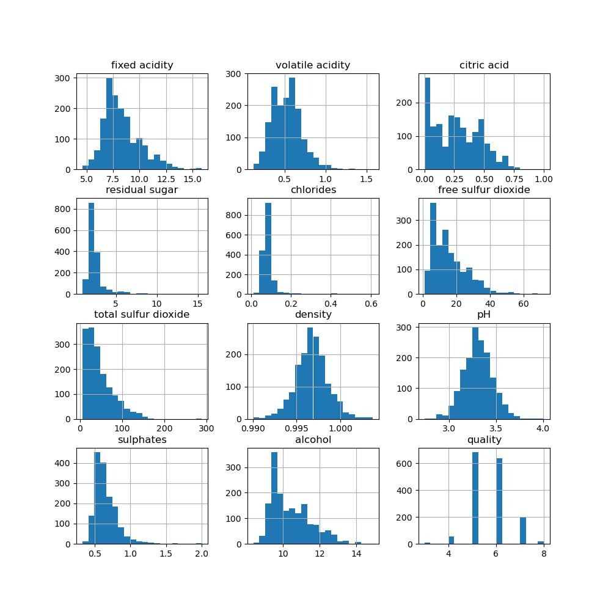

Wine Physico-chemical Properties Info
Fixed Acidity- The measure of tartaric acid in the wines, measured in grams per Liter (g/L, reported at the CVRVV as grams per cubic decimeter). Tartaric acid contributes both to the chemical stability of the wine and flavor profile. For red and white wines, the CVRVV sets a minimum of 4.5 g/L.
Volatile Acidity- The measure of acetic acid in the wines, measured in g/L. Acetic acid is responsible for how much of a vinegar taste exists in the wine. The CVRVV sets a maximum of 1.20 g/L for red wines and 1.08 g/L for white wines.
Citric Acid- The measure of citric acid in the wines, measured in g/L. While not naturally occuring in grapes in large amounts, citric acid is the familiar taste of citrus fruits (e.g. oranges) and allowed as an additive for removal of iron and copper. A maximum of 1.00 g/L for both red and white wines is set by the CVRVV.
Residual Sugar- A measure of the amount of sugar left over after the fermentation process, measured in g/L. Typically a mix primarily of glucose and fructose, but the specific lab test conducted by the CVRVV lab is unknown. There are no minimum or maximuml limits set by the CVRVV.
Chlorides- The measure of sodium chloride, salt, in the wine, measured in g/L. The maximum limits set by the CVRVV are 1 g/L for both red and white wines.
Free and Total Sulfur Dioxide- Measures of the amount of sulfur dioxide in the wine, measured in milligrams per Liter (mg/L, 1000 mg/L is 1 g/L). Used as a chemical stabilizer, free sulfur dioxide refers to sulfur dioxide existing in its sole molecular form whereas total sulfur dioxide further includes sulfur dioxide that has been chemically bound to other molecules. The maximimum limits set by the CVRVV vary depending on the amount of sugar in the wine.
Density- The density of the wine, measured in grams per milliliter (g/mL). Plain water has a density of about 1 g/mL, and alcohol (ethanol) has a density just under 0.8 g/mL.
pH- The pH of the wine, measured on the unitless pH scale. Nominally ranging from 0-14, a neutral pH is about 7, such as water, and acidic solutions are less than 7.
Sulphates- A measure of potassium sulphates in the wine (potentially potassium metabisulphite) in g/L. Primarily used as chemical stabilizers, the CVRVV sets upper limits of 2 g/L for red and white wines.
Alcohol- The measure of alcohol in the wine, expressed as a percentage of volume. For red and white wines, the CVRVV sets a minimum total alcohol of 8% and maximum total alcohol of 14%.
Quality- Blind taste tests were performed by professional wine makers and tasters. The rating was a scale from 0-10, with 0 being "very bad" and 10 being "excellent". Each wine was taste-tested by at least 3 people and the median of the scores was taken as the quality.
Distributions of physico-chemical properties of the Portuguese "Vinho Verde" wines
Red variants 
White variants

Can we predict rated qualities based on physico-chemical measurements?
Supervised Learning models
Logistic Regression model
We used scikit-learn's LogisticRegression with the mulitnomial keyword, linear lbfgs solver, and other default parameters, on data scaled with scikit-learn's StandardScaler. We binned the qualities by combining the 3 & 4 classes and 8 & 9 qualities (for white wines). The results are shown below.


The raw accuracies are 57.1% and 53.8% for red and white wines, respectively. The logistic regression was good at predicting the more-populated (i.e. center) qualities. It didn't do well at predicting the 3-4 and 8-9 classes, so we'll have to try something else.
First SVC model
The use of a linear model was called into question. So, we used scikit-learn's SVC (support vector classification) with the default exponential RBF solver and other default parameters on data scaled with scikit-learn's StandardScaler. We binned the qualities by combining the 3, & 4, & 5 classes and 7, & 8, & 9 qualities. The results are shown below.


The raw accuracies are 60.2% and 63.2% for red and white wines, respectively. The first SVC was also good at predicting the more-populated qualities and did better overall than the logistic regression. It didn't do well at predicting the less-populated class, the 7-9 class, so we try pushing on.
Optimized SVC
We continued with scikit-learn's SVC with the default exponential RBF solver and other default parameters. This time, the data was scaled with scikit-learn's PowerTransformer using the Yeo-Johnson method. We binned the qualities to a binary outcome. Average Quality wines were the 3-6 classes and High Quality wines were the 7-9 classes. The results are shown below.


The binary SVC did very well! It correctly classified each wine as either Average or High Quality (100% accuracy).
The binary SVC even works accurately when we combine the red and white wines into a single dataset.
SVC Scatter plot
We can visualize the last binary SVC on the combined data using a scatter plot following a Principal Component Analysis. The explained variance ratio using two componets is around 50%.
Can a naive KMeans clustering separate red and white wines based on physico-chemical measurements?
Unsupervised Learning model
Using StandardScaler-scaled data and only the 11 physico-chemical measurements (no quality column), we instantiate a scikit-learn KMeans algorithm to try differentiating between the red and white wines.In the below scatter plots, we show various features on either axis to try visualizing the results, since we can't plot in 11 dimensions; we tried to choose features that show differentiation in the histograms above. All white wines are plotted in orange and the red wines are plotted in purple. Wines predicted to be red (given prediction class 1) are show as circles and wines predicted to be white (given prediction class 0) are shown as diamonds. Therefore, false reds, white wines that were predicted to be red, are orange circles and false whites, red wines predicted to be white, are purple diamonds. The falsely-predicted wines are further outlined in black.
Scatter plot #1

Scatter plot #2

Scatter plot #3

Confusion matrix Results

As we can see, the red and white wines are separable to a balanced accuracy of 98.55%. Technically, the model doesn't predict which wines are white or red, it just grouped similar wines together. We have to assume the model will be correct in order to say how correct it is.
Citations
With some information available only in Portuguese, Google Translate was used and some mistranlations may have occurred- Primary paper: P. Cortez, A. Cerdeira, F. Almeida, T. Matos and J. Reis. Modeling wine preferences by data mining from physicochemical properties. In Decision Support Systems, Elsevier, 47(4):547-553, 2009. (Paper and data also available at http://www3.dsi.uminho.pt/pcortez/wine/)
- About CVRVV:
- CVRVV Testing Lab:
- CVRVV red wine requirements:
- CVRVV white wine requirements:
- Overview of vinho verde wines:
- Various acids in wine:
- Scikit-learn:
- Pandas:
- Numpy:
- Matplotlib:
- Seaborn:
- Bootstrap:
- R:
- Tidyverse: